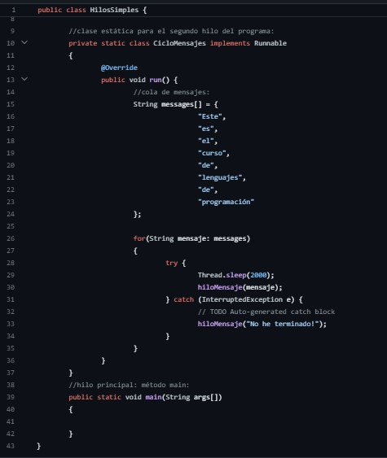
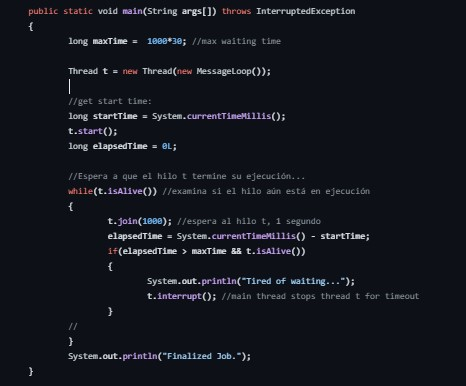
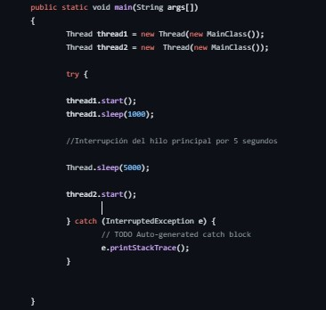

este corte se hablo sobre los hilos simples para poder ejecutar algoritmos en forma concurrente, es decir que comience la ejecución de la función pero continúe con la ejecución de la función main o la función desde donde se llamó al hilo..
Este ejemplo crea un hilo y espera a que termine.
Intrrupcion del hilo por 5 segunodn ejemplo
